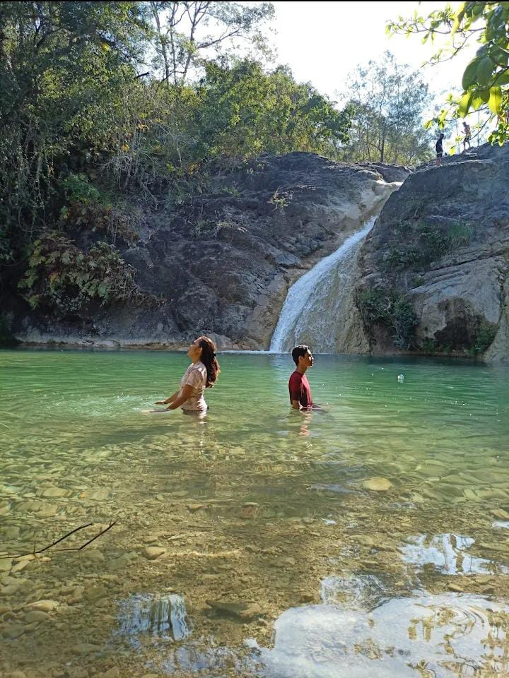
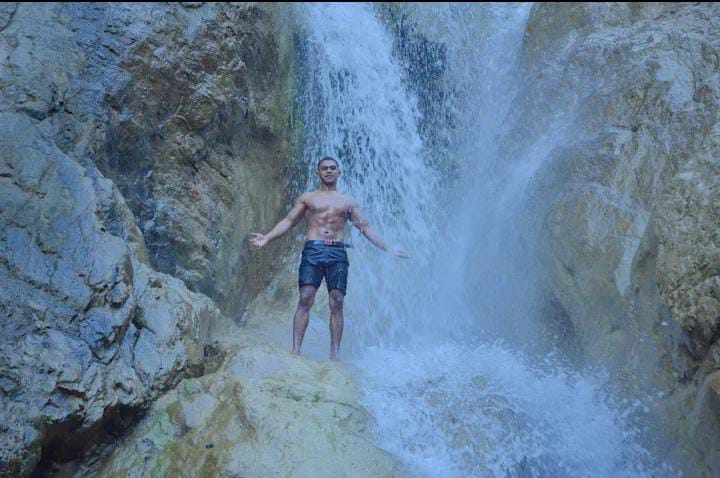
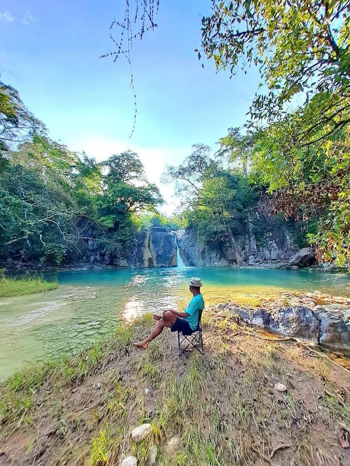

📍 Deskripsi Lokasi
Air Terjun Besin terletak di Desa Oinbit, Kecamatan Insana, Kabupaten TTU, Nusa Tenggara Timur. Tempat ini menghadirkan panorama alami dan unik dengan tiga tingkatan air terjun yang memukau, cocok untuk pencinta alam.
✨ Ciri Khas Air Terjun
- Tingkat 1: satu aliran lurus dari ketinggian sedang.
- Tingkat 2: dua aliran terpisah yang menyatu di kolam.
- Tingkat 3: tiga aliran lebar jatuh ke kolam alami.
- Air sangat jernih dan segar, terutama saat musim hujan.
👥 Profil Pengunjung
- Wisatawan lokal dari TTU dan sekitarnya.
- Masih alami dan belum ramai, cocok untuk petualangan.
- Dikunjungi oleh pecinta trekking dan eksplorasi alam.
💰 Tarif Masuk
Tiket Masuk: Gratis, belum ada tarif resmi.
- Disarankan memberi donasi sukarela untuk kebersihan dan partisipasi warga.
- Parkir dikelola warga secara informal dengan donasi kecil.
🕒 Jam Operasional
Belum ada jam resmi, tetapi waktu ideal berkunjung adalah pukul 09.00 – 15.00 WITA demi keselamatan dan pencahayaan alami yang optimal.
✅ Tips & Rekomendasi
- Gunakan Google Maps atau tanya warga (Kode Plus: GQQG+9Q8).
- Bawa perlengkapan pribadi seperti air minum, snack, alas kaki anti licin.
- Disarankan tidak datang sendirian demi keselamatan.
- Jaga kebersihan dan jangan tinggalkan sampah.
Sumber: Dokumentasi Lapangan & Wawancara Warga Oinbit